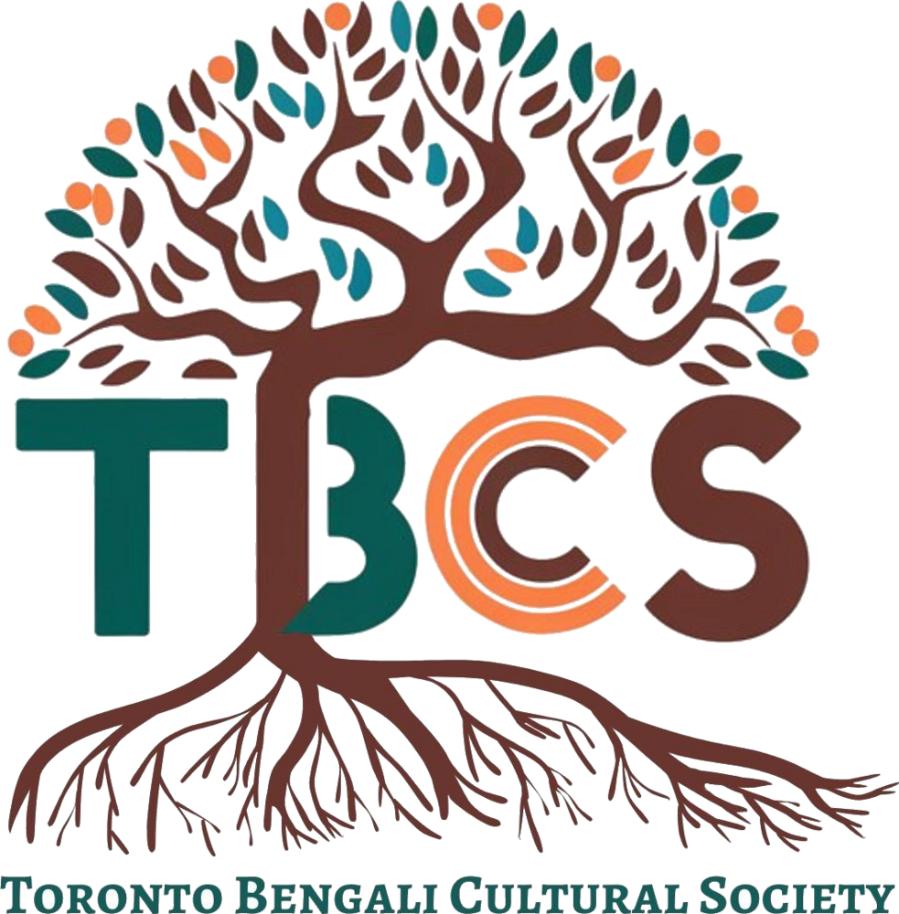

Bringing the spirit of Bengal to the GTA
The mission of Toronto Bengali Cultural Society is to promote social justice and preserve our cultural heritage to create a more harmonious and equitable society.
Rooted in heritage, growing with community
Our vision is to weave a network where spirituality and community engagement serve as cornerstones for harmony, progress, and empowerment. We envision a society where individuals of diverse faiths and backgrounds come together, driven by mutual respect and shared core values, in order to create resilient communities and cohesive societies.
Our mission is to promote social justice and preserve our cultural heritage to create a more harmonious and equitable society, facilitating inclusive and diverse initiatives through fostering spiritual community development.

Our Objectives
Promote Religious Harmony
TBCS is committed to ensuring people of multiple faiths congregate through shared beliefs, bringing together diverse perspectives that strengthen the bonds within our community.
Promotion of Cultural Heritage
TBCS recognizes the importance of preserving and promoting our community's diverse traditions through educational programming, cultural events, and heritage initiatives that pass our legacy on to future generations.
Cultivate Social Welfare
We take on societal challenges — poverty, hunger, education, healthcare, and environmental sustainability — through community-focused projects.
Community Engagement & Participation
TBCS actively engages with communities and like-minded NGOs through collaboration and partnership, empowering individuals and building a more inclusive society.
Social Responsibility
During times of crisis and humanitarian emergency, TBCS provides relief and assistance to the populations affected.
However you'd like to help, there's a place for you
[PLACEHOLDER] TBCS runs entirely on volunteer effort and community generosity — from decorating the pandal to covering the cost of the venue. Every hand and every dollar makes this Pujo possible.
Volunteer
Help with parking, set-up, registration, food distribution, and more. No experience necessary — just a positive attitude.
Sign UpSponsor
[PLACEHOLDER] Put your business in front of the GTA Bengali community and help fund the celebration.
Become a SponsorDonate
[PLACEHOLDER] A one-time or recurring gift of any size goes straight toward the venue, priest, and programming.
Donate NowThe land we gather on
We acknowledge that Toronto sits on the traditional territories of the Mississaugas of the Credit, the Anishnabeg, the Chippewa, the Haudenosaunee, and the Wendat peoples, and is now home to many diverse First Nations, Inuit, and Métis peoples. This territory is covered by Treaty 13 and the Williams Treaties.